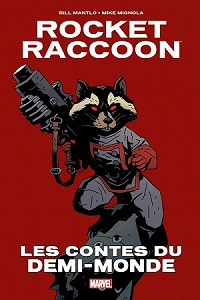
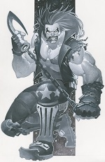

Né le 30 novembre 1952 à new york, Keith Ian Giffen est un autheur/illustrateur assez bien connu de Marvel et DC Comics. Son premier travail fut "The Sword and The Star" mis dans le quatrième Marvel Preview.

Son prochain oeuvre, en collaboration avec Bill Mantlo fut la création de Rocket Racoon qui fit ses débuts dans le septième Marvel Preview. Il devint connu pour illustrer et, plus tard, écrire la Légion des super héros dans les années 80 et 90. Par la suite il co-créa l'humoristique Ligue des justiciers: International qui a plus tard ammené par succès le spinoff Ligue des justiciers: Europe.

Après, il travaila sur la ligue des justiciers durant cinq ans et par la suite créa un nouveau personnage: le chasseur de primes intergalactique, Lobo ainsi qu'un "potentiel" héro: Ambush Bug. Il aida en même temps Martin Pasko en illustrant une série de petites histoires de Doctor Fate. Par la suite il travailla sur plusieurs autres titres et est responsable de la traduction de Battle Royale et Ikki Tousen ainsi que "J,aime l'halloween" pour Tokoyotop. Il travailla pour Dark Horse de 1994 à 1995 en tant qu'écrivain de deux petites séries Division 13 et il écrit X-O Manowar, Magnus, Robot Fighter, Punx et la finale de Solar, Man of the Atom. Par la suite il pris un temps de repos et fit des soryboards pour les émissions The Real Ghostbusters et Ed, Edd 'n' Eddy finissant avec la création de Metal Men.